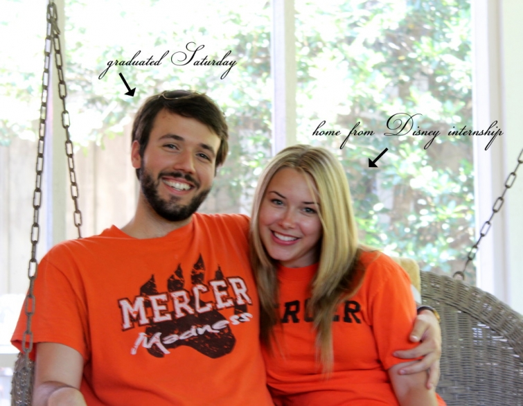

.png)
.PNG)
.PNG)
.PNG)
.PNG)
.PNG)
.JPG)
.JPG)
.PNG)
.PNG)


What a fun weekend we’ve had here! I mentioned to you on Saturday that we were so happy that our Disney daughter had made it home from her internship at Walt Disney World. She arrived just in time for her boyfriend’s college graduation.

So we spent Saturday afternoon watching a graduation ceremony.
After 3 hours of waiting, his name was called, and he received his diploma. 🙂

Later that night, the graduate and almost all of his family came over for dessert and coffee. My mother made a pound cake for us, and we enjoyed it with fresh peaches, strawberries, blackberries and whipped cream. My mother-in-law baked Swedish gingerbread for us, (recipe here) and I prepared apples and Heath Brickle dip (recipe here.) You can’t see it in the photo because it’s behind the chalkboard. (And yes, I know. I also made it a couple of weeks ago, but it is sooo good. 🙂 )
(Sorry for the weird lighting. I hate taking photos at night!)
We had a little more than coffee to drink. 🙂
The graduate’s family returned home, and he returned to the college to pack up, but the next morning he was back at our house…this time for a graduation lunch. (I did not even think of the dessert party until Saturday morning, but I had been planning this lunch for awhile.) We really had to sneak around to get everything set up upstairs without our daughter or her boyfriend knowing we were doing it. (I wanted it to be a surprise.) I had even set the table in our dining area by the kitchen as if we were eating in there to throw them off. 🙂
We had our traditional grilled steaks, baked potatoes, fresh bread, our daughter’s favorite salad – the romaine and ramen one, (recipe here) and leftover shortcake for dessert. My husband grilled the steaks. I baked the potatoes and bread, and our daughter and her boyfriend prepared the salad. I was able to sneak the potatoes upstairs in a thermal insulated bag, and my husband managed to get the steaks (wrapped in aluminum foil) up there too without anyone seeing him. So when they finished making the salad, our daughter started to carry it to the table and asked, “Where’s all the food??” That’s when we told them to go upstairs. It was a fun surprise. 🙂
I can’t seem to break away from using school decor for graduation parties. It just seems to work so well. (But I will have to come up with something different for our daughter’s graduation next year…I think I’ve used the theme enough. 🙂 )
The school’s colors are black and orange- so that was my color scheme. I changed out the pillow covers to orange ones, and our black and white drapes worked well with all the black and orange balloons. (Our middle son was home for the weekend, and thank goodness he was able to make a secret run for a new helium tank!)
We had a great time and were all totally stuffed when we finished. I am going to really have to think hard to come up with an idea for our daughter’s graduation party.
At least I have a year to plan for it. 🙂
Thank you again for stopping in for a visit here. Fingers crossed, I will have some pretty houses for you to see this week…our last crazy week of school!
Until next time…


.PNG)
Kelly,
You win Mom of the year in my book! Wow! What great parties and surprises! Could you do a Disney themed Party for your daughter next year? Kind of like the Mickey mouse one you did recently just expanded a bit or more girlie? Thanks for sharing! Take care.
I love all of the care you put into everything you do! I really enjoy your blog!!
Congrats to Sean and glad that there was a great surprise in that wonderful room so beautifully decorated for the occasion. Loved the dessert table you served the night before too!…I am sure you are counting down the days for retirement!
Both of them have adorable faces!
Your daughter and boyfriend are too cute! How sweet of you to have a celebration or him. Always some kind of doings with Kelly and her gang! You should just about be approaching your retirement. Can’t wait to read of your farewell. The leaving of so many years of such hard work and devotion, to a new life full of new adventures…. 🙂 P. S. Just asking too, how many oz. on the pineapple juice for your Heath brickle dip recipe. Will have to try it. Can’t believe Memorial Day is almost here.
What an adorable couple and know you are thrilled to have your daughter home and that Sean is excited to have reached this milestone in his life! The party looks amazing as always. Just the right touches!
looks like a great party, Kelly! The school colors is a perfect theme/decorating motif.
I clicked through to your salad recipe and saw you made Ina’s blondies with fall mix M&Ms. They’ll be perfect with red, white and blue M&Ms for our Relay for Life team, the Stars & Stripes.
What a wonderful surprise graduation party! Your daughter and her boyfriend are adorable.
I have been reading your blog from the beginning. I love your decorating and party ideas. I don’t know how you do all that you do and teach school. I taught school for thirty years and retired from teaching twelve years ago. I have a part-time job as an adjunct professor at a community college. You will love retirement!
Sounds like a busy but wonderful weekend! As usual, your decorations and food look perfectly fabulous! Definitely want to try some of those recipes!
Kelly, what a delight to read your posts. Thank you for including us in your wonderful family celebrations!
I love how you can change out a few accessories and easily customize your colors to match the celebration! I also can’t wait to try the Heath brickle dip! Yummy!
What a wonderful weekend! I think you could go into event/party planning. 😉 🙂 You have a gift. I’m sure you enjoy it too. Your daughter is so lovely. Enjoy your summer with her. 🙂
Love all those little touches and how you make it look so effortless. You have a good eye that keeps your themes from being too themey- just pulled together and always so charming!
Enjoy this week!
What a cute theme for a graduate. I love the black globe and the black and orange spots of color. Your daughter and her boyfriend are so cute.
How exciting to have a year to plan your daughter’s graduation celebration, I can’t wait. You always surprise and delight!
xo,
Karen
I agree with Kathy and Louvina…… You are a Wonder Woman! Congrats to your daughter’s bf! Your food looks delish as always!
We had a big high school graduation weekend in Memphis for my nephew. His mom also had the dessert party idea! In addition to graduation, they were also celebrating the first year of a brand new school system! Since my brother in law is on the school board my sister in law had a huge champagne/ dessert celebration party! The graduates all got ginger ale.. Ha ha! She made all the luscious desserts except for the main cake which came from her favorite bakery, Oh My Ganache. Don’t you love that name. It had pics of cute children painted all around the side and the symbol of their school system painted on the top.
Thank goodness for big celebrations with the ones we love….. Makes life so special!
Congratulations – looks like so much fun! Can I tell you how much I love your party table decor – the stack of ribbon bound books and globe are perfect!
Such a great job! I love your theme parties.
Enjoy your last week of school!!! It will really hit you next school year when the buses start rolling out and you don’t have to.
Congrats to you and Sean, Cindy
PS I know you are glad to have you daughter home.
So sweet! Congratulations Sean, and also Kelly for what sounds like a wonderful surprise. I too cannot see anyone objecting to a theme ‘re-run’, but on the other hand I look forward to seeing what you come up with!!
Oh, wow! How fun! And, how sweet of you to have a graduation party for your daughter’s bf. What a beautiful couple! (Have they dated a long time?) We went to my son’s precious gf’s graduation party last night and it was so much fun…wonderful friends, decorations and food. (She graduated from Ole Miss.) Kelly, you are really a Wonder Woman. I can’t believe you are doing all of this with the end of school. I am sure Louvina is right, love has a lot to do with it. I have been away and am just catching up on several of your posts. Are you doing an end of your teaching career post? You are not going to believe how much you love retirement.
Oh…what fun…a surprise party! Great decorations! What a fun year you’re going to have planning your daughters party! 😉
Two wonderful, colorful celebrations for your cute daughter’s handsome boyfriend’s graduation! I agree…….how do you manage your blog, while having such fun, well done parties and teaching school? You’re amazing and we, your readers, are the beneficiaries of your hard work. Thanks for the glimpse into your family’s special occasion celebration.
What a gorgeous young couple! Oh, to be young and attractive, with your whole life ahead of you, a supportive family behind you, and so much to celebrate!
Decorations and menu looked great — I don’t think anyone would be disappointed with a rerun of that a year from now… or a WEEK from now, for YOUR “graduation”!
Are those Coke “grad” bottles the real thing (sorry, I truly did not notice that pun until it was on the page), or did you make those labels? Haven’t seen those here, but what a fabulous idea!
What a great finale to a fabulous fun weekend! Mercy, Wonder Woman! How do you do ALL you do?! LOVE has a lot to do with it, right!! PS what a cute couple!! Enjoyed seeing it and yea for orange and black– my school colors back in Ky! 🙂
Hi Kelly,
All these recipes look delicious! I’m hoping to make the Brickle dip for Memorial Day. Can you tell me how many ounces of pineapple juice go into this? Thank you!